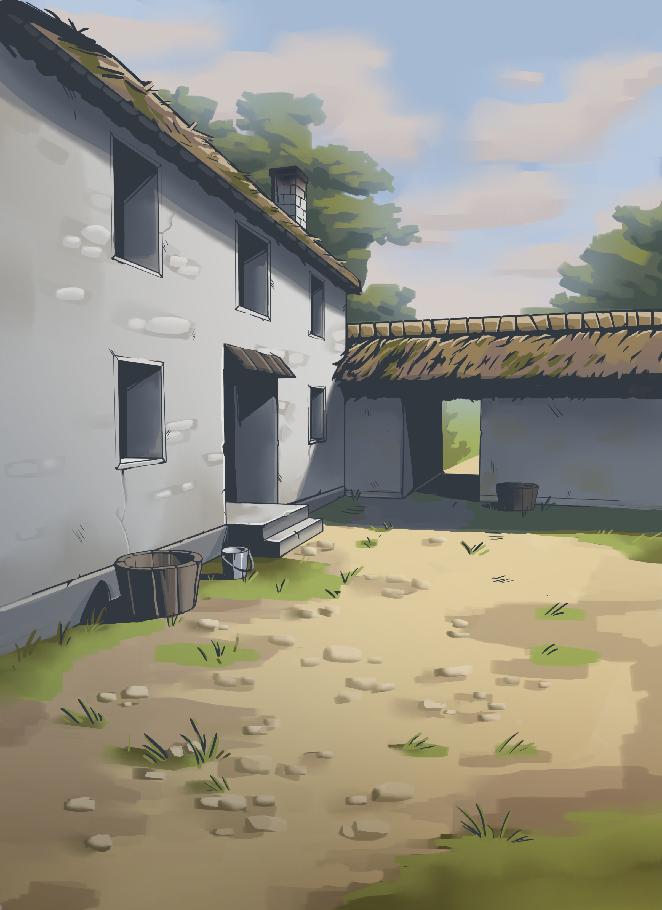

Crossworld
Коллекция интерактивных историй
делаем Crossworld — интерактивные истории

Сборник связанных между собой интерактивных историй. Каждый эпизод играется отдельно, но решения откликаются в общем мире.
Мистика, научная фантастика, драма, детектив — и несколько концовок, к которым можно возвращаться через ключевые развилки.